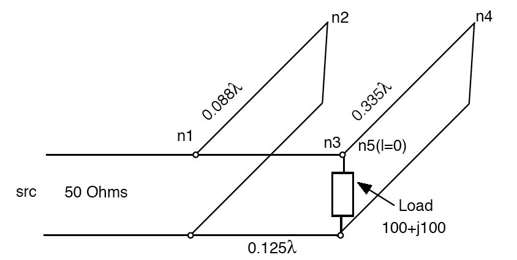

Copyright (c) 1989-2007 Silicon DSP Corporation Permission is granted to copy, distribute and/or modify this document under the terms of the GNU Free Documentation License, Version 1.2 or any later version published by the Free Software Foundation; with no Invariant Sections, no Front-Cover Texts, and no Back-Cover Texts. A copy of the license is included in the section entitled "GNU Free Documentation License".
The TCL interpreter has been integrated into TransNetCalc providing for very powerful capabilities in the design and tuning of transmission line networks. Iterations can be setup to optimize designs or optimization algorithms can be run in TCL scripts that manipulate the transmission line network parameters such as lengths, transmission line type parameters and topology.

n1 n2 n3
n3 n4 n5
n2
n4
n5
end
n1 coax1 30
n2 coax1 1.76 0 0
n3 coax1 2.5
n4 coax1 6.6 0 0
n5 R100_L0.0000015915 0 open
The coaxial transmission line coax1 has characteristic impeance of 50 Ohms.
In addition to the TCL commands that directly interact with the transmission line topology and nodes, vector commands for both real and complex vectors and complex scalar commands have been added to TCL. These are documented below.
Two sample scripts are provided. The first script calculates the variation of VSWR versus the length of a stub in a double stub tuner. The second example script calculates the variation of VSW with frequency around the tuned frequency.
| VSWR vs Length of Stub | VSWR vs Frequency |
|---|
| Vector Commands | Transmission Line Network Commands | Complex Scalar Commands |
|---|
| Command Syntax | Description |
|---|---|
| vec ?vector? [list ...] | Create a real vector with the TCL List command. Example, vec [list 11 22 33 44 55] |
| cxvec ?vector? [list a+bi c+di ...] | Create a complex vector with the TCL list command. Example, cxvec [list 1+2i 3+4i 5+6i] |
| vpr format [filename] [-nolen or -twocol] | Print vector (complex or Real) or complex scalar to terminal or store in file. Format must be specified. As simple e or f or like 14.2f just as in C formatting. For real vector can specify if vector length stored (to avoid use -nolen at end of command). For complex vectors specify -twocol at end of command to store as two columns with no length. Otherwise store as complex a+bi. |
| vrd ?vector? fileName | Read an ASCII real vector from a file given by fileName. The first line in the file must be the vector length. |
| vcxrd ?vector? fileName | Read an ASCII complex vector from a file given by fileName. The first line in the file must be the vector length. The complex values are in the format: a+bi |
| vset $Vector $value $index | Set the element index within the Vector to value |
| vget $Vector $index ?value? | Get the value at index from the Vector . Store in value |
| vcr ?vector? $length [$std $seed] | Create a real vector of length,$ length. If std and seed provided populate with Normal distribution. Otherwise fill with zeroes. |
| vcxcr ?vector? $length [$std $seed] | Create a complex vector of length,$ length. If std and seed provided populate with Normal distribution. Otherwise fill with zeroes. |
| vdot $x $y ?z? | Calculate the dot product of two vectors. Both vectors must be real or complex but not mixed. |
| vcxset $Vector $value $index | Set the element index within the Vector to complex scalar value |
| vcxget $Vector $i ?value? | Get the value at index from the Vector . Store in complex scalar value |
| vfft $Vector ?complexVector? | Compute forward FFT of real vector. Store in complex vector. |
| vifft $Vector ?resultReal? | Compute inverse FFT of complex vector. Result is real FFT. Complex vector must be symmetric with imaginary of Nyquist term zero. |
| saxpy $y $x $alpha # y= alpha x + y , alpha scalar | Compute y=alpha*x+y where alpha is a scalar. Both complex and real supported but not mixed. y is replaced. |
| vconv $x $f $y # vectors either all complex or all real | Compute y= convolution of x with f. Note vectors must exist before hand. Result is stored in y. Both Real and Complex supported. |
| Double Stub Tuner | VSWR Results |
|---|
# Transmission Line Topology Calculation and Analysis (TransLineCalc)
# Command Tool Scripts
# Copyright (C) 2006 Sasan H Ardalan
#
# This script is free software; you can redistribute it and/or
# modify it under the terms of the GNU General Public
# License as published by the Free Software Foundation; either
# version 2 of the License, or (at your option) any later version.
#
# This script is distributed in the hope that it will be useful,
# but WITHOUT ANY WARRANTY; without even the implied warranty of
# MERCHANTABILITY or FITNESS FOR A PARTICULAR PURPOSE. See the GNU
# General Public License for more details.
#
# You should have received a copy of the GNU General Public
# License along with this library; if not, write to the Free Software
# Foundation, Inc., 59 Temple Place, Suite 330, Boston, MA 02111-1307 USA
#
# http://www.ccdsp.org
#
#
#
# This is a double stub tuner. At node n1 we have a match.
# node n2 is the second stub near the generator
# At 10MHz the network is matched.
#
# in the following script we change the length of the stub n2
# by +- 10% around the length where a match is achieved.
# 100 points are calculated.
# results are stored as follows.
# The complex input impedance is stored in a complex vector
# It is stored in a filex as complex numbers (a+bi)
# The VSWR and Length are stored in a list.
# This list is later stored in a file as two columns
#
#
# load the transmission line topology file "t.top"
#
tload t.top T
#print the topology
tpr $T
# set the complex generator and generator source impedance
cx 1.0 0.0 g
cx 50.0 0. zs
#calculate all nodes at 10MHz and store the impedances, z0, gamma,
# and current for each node
tcalc $T 1e7 $g $zs timp tcur
#print total input impedance and current (complex scalars)
vpr $timp
vpr $tcur
# get the length of the stub n2
ngetlength $T n2 n4len
#calculate +-10% and dlength
set lenBegin [ expr $n4len -0.1*$n4len]
set lenEnd [ expr $n4len + 0.1*$n4len ]
set dlen [expr ($lenEnd-$lenBegin)/100.0 ]
#create complex and real vectors to store results (much more efficient than lists)
vcxcr zvlen 100
vcr zmag 100
# get z0 and gamma (propagation constant) to use in VSWR calculation
nz0gamma $T n1 z0 gamma
# initialize list to store results (in addition to storing in vectors)
set results [list {}]
puts "Iterating over length"
for { set i 0 } { $i<100 } {incr i} {
set len [expr $lenBegin +$i*$dlen ]
#change the length of the stub
nsetlength $T n2 $len
#recalculate the network for new length
tcalc $T 1e7 $g $zs
# store all the computed values for node n1 (left right impedance, current )
# the variables are automatically created
nvalues $T n1
# compute total inpedance at node n1 (variables $n1_zl and
# $n1_zr were automatically created in the previous command)
zpar $n1_zl $n1_zr zt
vpr $zt
#store the input impedance at n1 in the complex vector $zvlen (z versus length)
vcxset $zvlen $zt $i
#get the magnitude of the impedance
cxgetpolar $zt zmagval theta
#compute reflection coefficient
rflc $zt $z0 rflc_n1
#compute vswr
vswr $rflc_n1 vswr_n1
#store in real vector
vset $zmag $zmagval $i
#store vswr in list with length
lappend results [list $len $vswr_n1 ]
}
#print resulst of input impedance
vpr $zvlen 14.6f zin_vs_len.dat -twocol
#
# create a file to store the vswr vs length
#
puts "Storing results in vswr.dat"
set out [ open vswr.dat w ]
# puts $out [ llength $results ]
#puts -nonewline $out "#Length"
#puts -nonewline $out "\t"
#puts $out "MagZin"
foreach value $results {
puts -nonewline $out [lindex $value 0]
puts -nonewline $out "\t"
puts $out [lindex $value 1]
}
close $out
# Transmission Line Topology Calculation and Analysis (TransLineCalc) Command Tool Scripts
# Copyright (C) 2006 Sasan H Ardalan
#
# This script is free software; you can redistribute it and/or
# modify it under the terms of the GNU General Public
# License as published by the Free Software Foundation; either
# version 2 of the License, or (at your option) any later version.
#
# This script is distributed in the hope that it will be useful,
# but WITHOUT ANY WARRANTY; without even the implied warranty of
# MERCHANTABILITY or FITNESS FOR A PARTICULAR PURPOSE. See the GNU
# General Public License for more details.
#
# You should have received a copy of the GNU General Public
# License along with this library; if not, write to the Free Software
# Foundation, Inc., 59 Temple Place, Suite 330, Boston, MA 02111-1307 USA
#
# http://www.ccdsp.org
#
#
#
#
# This is a double stub tuner. At node n1 we have a match.
# node n2 is the second stub near the generator
# At 10MHz the network is matched.
#
# in the following script we change the frequency of the stub n2
# by +- 10% around the frequency where a match is achieved.
# 100 points are calculated.
# results are stored as follows.
# The VSWR and freq are stored in a list.
# This list is later stored in a file as two columns
#
#
# load the transmission line topology file "t.top"
#
tload t.top T
#print the topology
tpr $T
# set the complex generator and generator source impedance
cx 1.0 0.0 g
cx 50.0 0. zs
set freq 1e7
#calculate +-10% of tuned frequency 10MHz
set fBegin [ expr $freq -0.1*$freq]
set fEnd [ expr $freq + 0.1*$freq ]
set df [expr ($fEnd-$fBegin)/100.0 ]
# initialize list to store results (in addition to storing in vectors)
set results [list {}]
puts "Iterating over length"
for { set i 0 } { $i<100 } {incr i} {
set f [expr $fBegin +$i*$df ]
#recalculate the network for new frequency
tcalc $T $f $g $zs
# get z0 and gamma (propagation constant) to use in VSWR calculation
nz0gamma $T n1 z0 gamma
# store all the computed values for node n1 (left right impedance, current )
# the variables are automatically created
nvalues $T n1
# compute total inpedance at node n1 (variables $n1_zl and $n1_zr were automatically created in the previous command)
zpar $n1_zl $n1_zr zt
#compute reflection coefficient
rflc $zt $z0 rflc_n1
#compute vswr
vswr $rflc_n1 vswr_n1
#store vswr in list with freq
set fMHz [expr $f*1e-6]
lappend results [list $fMHz $vswr_n1 ]
}
#
# create a file to store the vswr vs length
#
puts "Storing results in vswr_tune.dat"
set out [ open vswr_tune.dat w ]
foreach value $results {
puts -nonewline $out [lindex $value 0]
puts -nonewline $out "\t"
puts $out [lindex $value 1]
}
close $out
| © 2007-2017 Silicon DSP Corporation |